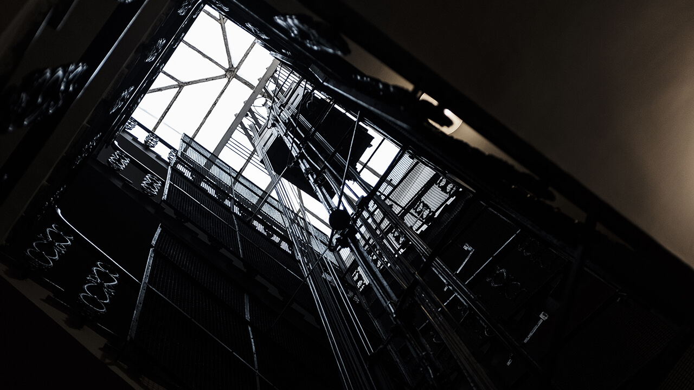

公司歷程
-
1845年-首部垂直載人設備誕生 首部垂直載人設備誕生以來，電梯屬冷門工業產品，非大眾終端個體消費品，長期蒙上一層薄紗，不為外人所了解。隨著新興科技領域擴張，歷經近180年的演化與蛻變，智能與傳動系統的普及，電梯技術門檻已經降低。綜觀汽車產業亦是如此，汽車受發動機(引擎)與變速箱的技術所箝制，長期為世界各大車廠所佔據，導致新進企業進入困難，汽車價格居高不下。
-
2021年8月-Masada永佳捷科技公司成立
 資本額新台幣1億以上，為國內知名大型開發商集團所投資，該集團每年建案名列前茅。『Masada永佳捷』是一家藉由AI科技、智能、遠端管理自動系統，運用在住、商新梯、汰改、維保等營業項目，加諸科技產品的應用，投入又深又廣的電梯公司。
資本額新台幣1億以上，為國內知名大型開發商集團所投資，該集團每年建案名列前茅。『Masada永佳捷』是一家藉由AI科技、智能、遠端管理自動系統，運用在住、商新梯、汰改、維保等營業項目，加諸科技產品的應用，投入又深又廣的電梯公司。
-
Future-企業理念『安全至上 專業至上 服務馬上到』對電梯產業的投入，除了基本核心的驅動與控制系統，在「穩定性」與「安全性」深入貫穿整個產品的研製精神，模塊化生產與模塊化組裝使得產品簡單，保養維修效率化、簡易化，而人性化、高度智能化更是整個Masada永佳捷公司的最大亮點。